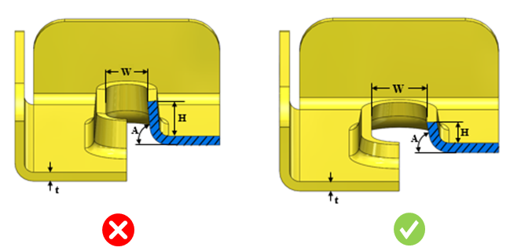

押し出し成形フォームのパラメータは、ユーザーが指定した値に従う必要があります。
外観上の変形や損傷などの金型上の問題を回避するために、押し出し成形フォーム形状の最小必要寸法を維持する必要があります。製造現場では標準工具が使用されており、押し出し成形フォームのパラメータが標準から逸脱すると、製造時に問題が発生します。
押し出し成形フォームの最大高さと板厚の比は、4.0 以下である必要があります。
フォームの最小推奨幅は、フォーム高さの 2 倍と板厚の 3 倍の合計以上である必要があります。
抜き勾配角度（A）は 90 度以下である必要があります。
DFMPro はフォーム高さを識別し、構成された値と照合して検証します。この押し出し成形フォームの高さは、フォーム幅を算出するための入力値として使用されます。フォーム高さは板厚に対する比として計算されます。また、抜き勾配角度の値も構成された値と照合して検証されます。
ユーザーは、デフォルトで構成されている値を編集できます。

ここでは、
H = 押し出し成形フォームの最大高さ
W = 押し出し成形フォームの最小幅
A = 抜き勾配角度
t = 板厚
注記：
正方形、長方形、および長円形（オブロング）形状のみがサポートされています。